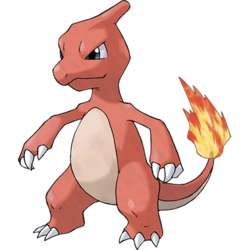
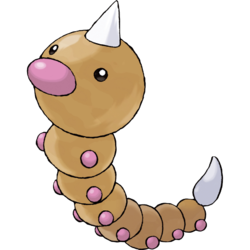
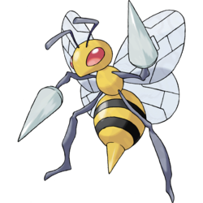
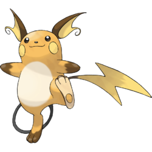
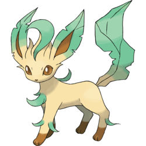
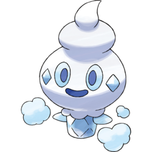
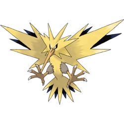
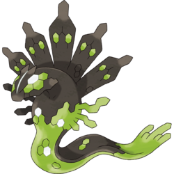
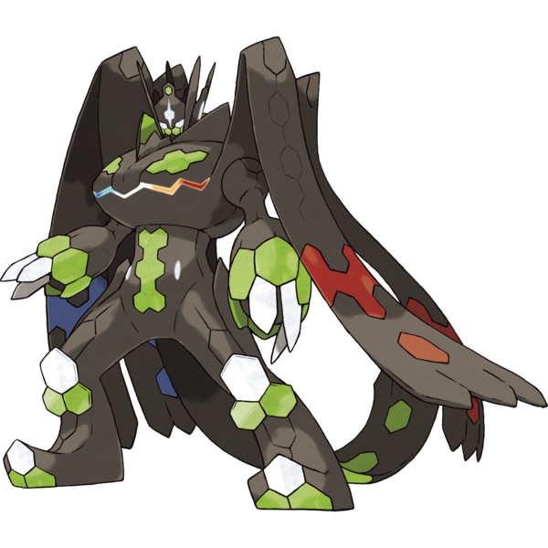

I am Makayla Couzelis, the creator of this webpage. My dad is the one who inspired me to do this. He is even making his own video game! Anyway, are you ready to explore pokemon world!?
These are pokemon that aren't speicial like legendaries or mythicals. You will also see them sorted out into regions. We are starting in the Kalos Region.
The Seed Pokemon
This is Bulsasaur, in Japanese, フシギダネ Fushigidane. It is a Grass and Poison type pokemon that is introduced in Generation I. It evolves into Ivysaur starting at level 16, which evolves into Venusaur starting at level 32.

The seed pokemon
This is is Ivysaur, in Japanese, フシギソウ Fushigisou. It is a Grass and Poison type. It evolves from Bulbasaur starting at level 16 and evolves into Venusaur starting at level 32.

The seed pokemon
This is Venusaur, in Japanese, フシギバナ Fushigibana. It is the final evolved form of Bulbasaur and evolves from Ivysaur starting at level 32 and is the final form of Bulbasaur. It can also Mega evolve using a Venusaurite. It is shown on the right.

The lizard pokemon
This is Charmander. It is a fire type. It evolves into Charmeleon starting at level 16.

The flame pokemon
This is Charmeleon. It is a fire type. It evolves from Charmander starting at level 16 and evolves into Charizard starting at level 36.
The flame pokemon
This is Charizard. It is a Fire and Flying type. It is the final evolved form of Charmander and evolves from Charmeleon starting at level 36.

The tiny turtle pokemon
This is Sqirtle. It is a Water type. It evolves into Wartortle starting at level 16.

The turtle pokemon
This is Wartortle. It is a Water type. It evolves from Squirtle starting at level 16 and evolves into Blastoise starting at level 36.

The shellfish pokemon
This is Blastoise. It is a Water type. It is the final evolved form of Squirtle and evolves from Wartortle starting at level 36.

The worm pokemon
This is Caterpie. It is a bug type. It evolves into Metapod starting at level 7.

The cocoon pokemon
This is Metapod. It is a bug type. It evolves from Caterpie starting at level 7 and evolves into Butterfree starting at level 10. If it is caught as a wild Metapod,the only move it can use is harden.
The butterfly pokemon
This is Butterfree. It is a Bug and Flying type. It is the final evolved form of Caterpie and evolves from Metapod starting at level 10.

The Hairy Bug Pokemon
This is Weedle. It is a bug and poison type and it evolves into Kakuna.
The Cocoon Pokemon
This is Kakuna. It is the evolved form of Weedle.

The Poison Bee Pokemon
Beedrill is a bug and poison type. It is also the final evolved form of weedle.
The Tiny Bird Pokemon
This is Pidgey it is a Normal and Flying type. It evolves into Pidgeotto starting at level 18.
The Bird Pokemon
This is Pidgeotto. It is a Normal and Flying type. It evolves from Pidgey starting at level 18 and evolves into Pidgeot starting at level 36.
The Bird Pokemon
This is Pidgeot. It is a Normal and Flying type. It is the final evolved form of Pidgey and evolves from Pidgeotto starting at level 36. It can also Mega evolve using a Pidgeotite.


The Plump Mouse Pokemon
This is Bidoof. It is a Normal type. It evolves into Bibarel starting at level 15.
The Beaver Pokemon
This is Bibarel. It is a Normal and Water type. It evolves from Bidoof starting at level 15.
The Fish Pokemon
This is Magikarp. It is one of the weakest pokemon,but it evolves into one of the most strongest water type pokemon named Gyrados.

The Atrocious Pokemon
This is Gyarados. It is the evolved form of Magikarp.
The Tiny Mouse Pokemon
This is Pichu. It evolves into Pikachu.

The Mouse Pokemon
This is Pikachu. It is the evolved form of Pichu.

The Mouse Pokemon
This is Raichu. It is the final evolved form of Pichu.
The Evolution Pokemon
This is Eevee. It evolves into eight different pokemon by doing special things!

The Bubble Jet Pokemon
This is Vaporeon. It is the water form of Eevee. Eevee evolves into this form when exposed to a water stone.

The Lightning Pokemon
This is Jolteon. It is the electric form of Eevee. Eevee evolves into this form when exposed to a thunder stone.

The Flame Pokemon
This is Flareon. It is the fire form of Eevee. Eevee evolves into this form when exposed to a fire stone.

The Sun Pokemon
This is Espeon. It is the psychic form of Eevee. Eevee evolves into this form when leveled up with high friendship during the day including morning,or when leveled up with high friendship by using a sun shard.

The Moonlight Pokemon
This is Umbreon. It is the dark form of Eevee. Eevee evolves into this form when leveled up with high fiendship during the night,or when leveled up with high friendship by using a moon shard.

The Verdant Pokemon
This is Leafeon. It is the grass form of Eevee. Eevee evolves into this form when leveled up near a moss rock.
The Fresh Snow Pokemon
This is Glaceon. It is the ice form of Eevee. Eevee evolves into this form when leveled up near an ice rock.

The Intertwining Pokemon
This is Sylveon. It is the fairy form of Eevee. Eevee evolves into this form when leveled up with a fairy type move and 2 levels of affection.

The Lion Cub Pokemon
This is Litleo. It evolves into Pyroar.

The Royal Pokemon
This is Pyroar. It is the evolved form of Litleo. If your Litleo is a boy it will evolve into the one on the left,but if it is a girl it will evolve into the one on the right.

The Soft Tissue Pokemon
This is Goomy. It evolves into Sliggoo.

The Soft Tissue Pokemon
This is Sliggoo. It is the evolved form of Goomy.

The Dragon Pokemon
This is Goodra. It is the final evolved form of Goomy.

The Small Fry Pokemon
This is Wishiwashi. It does not evolve. In replacement, it groups up into a school form which is very strong,very big,and looks like a huge fish made of fish.
LEFT:Wishiwashi RIGHT:Wishiwashi school form

The Fresh Snow Pokemon
This is Vanillite. It is an Ice type. It evolves into Vanillish starting at level 35.
The Icy Snow Pokemon
This is Vanillish. It is an Ice type. It evolves from Vanillite starting at level 35 and evolves into Vanilluxe starting at level 47.

The Snowstorm Pokemon
This is Vanilluxe. It is an Ice type. It is the final evolved form of Vanillite,and evolves from Vanillish starting at level 47
The Big Eater Pokemon
This is Munchlax. It evolves into Snorlax

The Sleeping Pokemon
This is Snorlax. It is the evolved form of Munchlax.

The Freeze Pokemon
This is Articuno. It is the legendary ice bird.

The Electric Pokemon
This is Zapdos. It is the legendary electric bird.
The Flame Pokemon
This is Moltres. It is the legendary fire bird.

The Genetic Pokemon
This is Mewtwo. It is created by team rocket and is a clone of Mew made of Mew's DNA also know as this phsycic energy that can be any type!

The New Species Pokemon
This is a psychic type named Mew. It is the stronger than all the pokemon in all the pokemon games,and TV shows.

The Order Pokemon
This is Zygard. It is a Dragon and Ground type. It does not evolve, but it does have different forms. Even though it is small ,it's forms are very strong.
LEFT:Zygard 10% form MIDDLE:Zygard 50% form RIGHT:Zygard complete form
 In this section of the webpage,I am going to show you alolan forms. Alolan forms are made when pre evolved pokemon from regions other than alola come to alola and when they evolve,they evolve into a form different from their normal evolution.
The Mole Pokemon
This is the alolan form of Diglett. It is a ground and steel type. It evolves into the alolan form of Dugtrio starting at level 26.
The Mole Pokemon
This is the alolan form of dugtrio. It is a ground and steel type. It evolves from the alolan form of Diglett starting at level 26.
The Coconut Pokemon
This is the alolan form of Exeggutor. It is a Grass and Dragon type. It evolves from execute when exposed to a grass stone.
The Rock Pokemon
This is the alolan form of Geodude. It is a Rock and Electric type. It evolves into the alolan form of Graveler starting at level 25.
The Rock Pokemon
This is the alolan form of Graveler. It is a Rock and Electric type. It evolves from the alolan form of Geodude starting at level 25,and evolves into the alolan form of Golem when traded.

The Megaton Pokemon
This is the alolan form of Golem. It is a Rock and Electric type. It is the final evolved form of the alolan form of Geodude and evolves from the alolan form of Graveler when traded.
The Sludge Pokemon
This is the alolan form of Grimer. It is a Poison and Dark type. It evolves into the alolan form of Muk starting at level 38.
The Sludge Pokemon
This is the alolan form of Muk.It is a Poison and Dark type. It evolves from the alolan form of Grimer starting at level 38.
The Bone Keeper Pokemon
This is the alolan form of Marowak. It is a Fire and Ghost type. It evolves from Cubone when leveled up at night starting at level 28.
The Scratch Cat Pokemon
This is the alolan form of Meowth. It is a Dark type. It evolves into the alolan form of Persian when leveled up with high friendship.
The Classy Cat Pokemon
This is the alolan form of Persian. It is a Dark type. In Pokemon Sun and Moon,Ultra Sun and Ultra Moon, it evolves from Alolan Meowth when leveled up with high friendship. In Pokemon Let's Go Pikachu! and Let's Go Eevee!, it evolves from the Alolan form of Meowth starting at level 28.
The Mouse Pokemon
This is the alolan form of Sandshrew. It is an Ice and Steel type. It evolves into the alolan form of Sandslash when exposed to an Ice stone.
The Mouse Pokemon
This is the alolan form of Sandslash. It is an Ice and Steel type. It evolves from the alolan form of Sandshrew when exposed to an Ice stone.
The Fox Pokemon
This is the alolan form of Vulpix. It is an Ice type. It evolves into the alolan form of Ninetales when exposed to an Ice stone.

The Fox Pokemon
This is the alolan form of Ninetales It is a Fairy and Ice type. It evolves from the alolan form of Vulpix when exposed to an Ice stone.
Almost all pokemon evolve, but there is also a special form of evolution called Mega Evolution. Only special final evolved pokemon can mega evolve. Each pokemon has up to two Mega stones that you need to mega evolve. You also need ome thing called a Key stone. Unlike the Mega stone, there is not many forms of it and you can use it for all mega evolutions. Like the Normal Pokemon, we are sorting them into regions.
The Seed Pokemon
This is Venusaur. It can Mega Evolve into one form. It can mega evolve into Mega Venusaur using a Venusaurite.
The Flame Pokemon
This is Charizard. It can Mega Evolve into two forms. It can mega evolve into the X form using Charizardite X and can mega evolve into the Y form using Charizardite Y.


The Shellfish Pokemon
This is Blastoise. It can Mega Evolve into one form. It can mega ecolce into Mega Blastoise using a Blastoisinite.

There are two main kinds of Z-Moves: Z-Moves which can be used by any Pokémon, with one Z-Move for each of the 18 types, and Z-Moves that can only be used by specific Pokémon. The Z-Move that a Pokémon can perform depends on the Z-Crystal it holds. There are 18 different Z-Crystals that correspond to each of the 18 types, and several others that correspond to specific Pokémon. Z-Moves work by powering up one of the Pokémon's normal moves, so the Pokémon must also know an appropriate move. For the type-related Z-Crystals, the Pokémon must know a move of the same type as the Z-Crystal it is holding. For the Pokémon-specific Z-Crystals, the move required differs for each Pokémon. A Z-Ring or Z-Power Ring is also required in order to perform Z-Moves. A Pokémon can only use a Z-Move if its Trainer is wearing a Z-Ring or Z-Power Ring and has the same Z-Crystal the Pokémon is holding. Mega Evolved and Primal Pokémon cannot use Z-Moves, even when holding an appropriate Z-Crystal (such as after Transform). First I will start with the Z-Moves that can be used by any pokemon.
This is Breakneck Blitz, the normal type Z-Move. When using Breakneck Blitz, the user builds up its momentum using its Z-Power and crashes into the target at full speed. The power varies, depending on the original move.